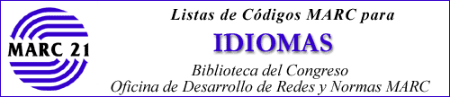

Edición de 2007
Esta página contiene enlaces a documentos
técnicos para los formatos MARC 21.
Cuando una versión española no existe, el enlace es
al texto inglés.
Versión de XML: www.loc.gov/standards/codelists/languages.xml
Pasar al la: Página MARC | Pagina de la Biblioteca del Congreso
 Biblioteca del Congreso
Biblioteca del Congreso